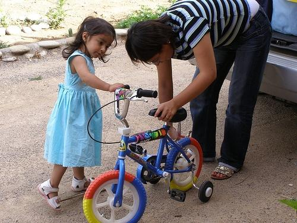
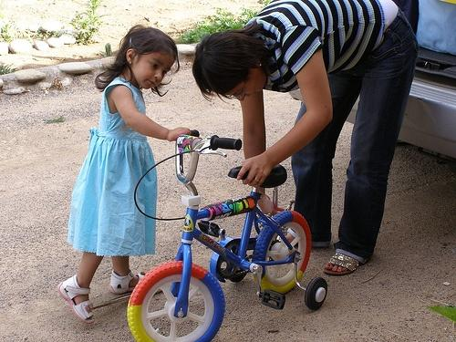

0.826519

0.860874

0.861328

0.868698

0.894478

0.914839

0.929342

0.965040

0.970937

0.971420
| Target image  | 0.826519 | 0.860874 | 0.861328 | 0.868698 | 0.894478 | 0.914839 | 0.929342 | 0.965040 | 0.970937 | 0.971420 |
Target image |  4176.870605 |  4030.038330 |  3132.369385 |  3086.017334 |  3041.910889 |  3038.479248 |  2987.877197 |  2937.636230 |  2934.849121 |  2843.390869 |
Target image |  5148.840820 |  3620.735596 |  3407.162354 |  3022.738037 |  3021.600342 |  2985.949951 |  2977.387939 |  2774.852783 |  2698.336182 |  2694.382324 |
Target image |  4879.336914 |  3965.170166 |  3908.463135 |  3561.922607 |  3230.830078 |  3153.589600 |  3099.298584 |  2986.923828 |  2966.572510 |  2833.337646 |
Target image |  4766.611328 |  4000.537354 |  3888.313965 |  3864.333252 |  3858.854248 |  3314.148682 |  3293.431152 |  3214.139404 |  3086.187988 |  3073.030518 |